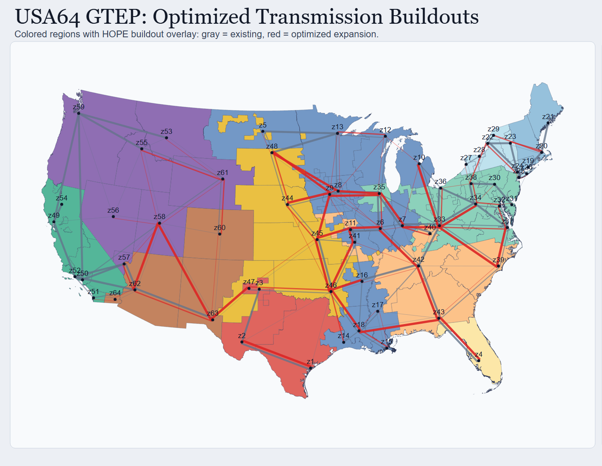
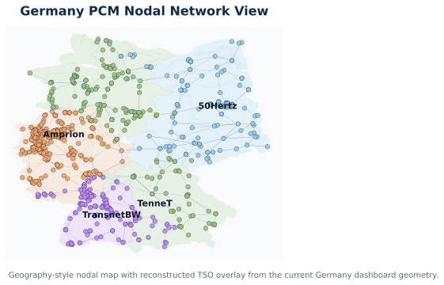
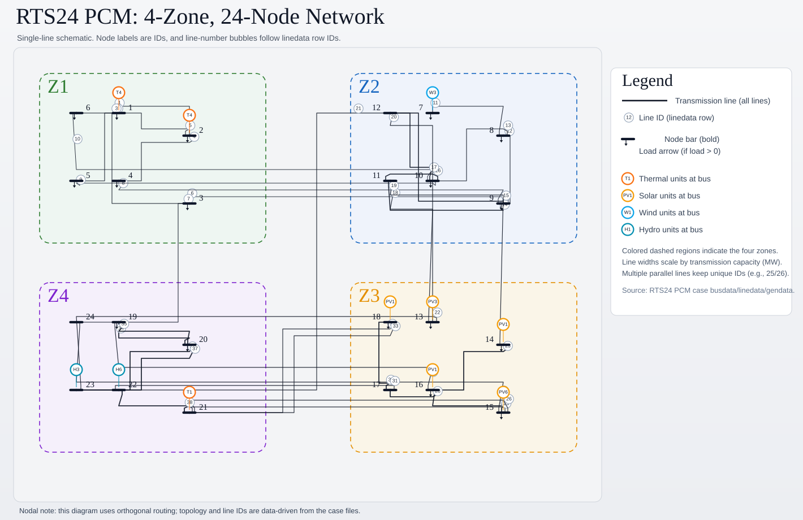

01Available
GTEP
Generation & transmission expansion planning
Evaluate investment pathways, policy targets, resource adequacy, storage, and transmission build-out.
- Long-term capacity decisions
- Policy scenarios
Open-source power-system intelligence
HOPE connects long-term investment, production-cost simulation, electricity-market operations, power flow, and emerging AI-agent workflows in one transparent Julia platform.
Explore the modules to see how HOPE links decisions across time horizons.
One platform, multiple horizons
Each HOPE mode is useful independently. Together, they create a transparent workflow for testing how planning choices perform under operational and market realities.
Evaluate investment pathways, policy targets, resource adequacy, storage, and transmission build-out.
Simulate chronological commitment, dispatch, storage, network constraints, prices, and emissions.
Model generator-level SCUC/SCED, rolling states, settlements, and two-settlement market outcomes.
Extend HOPE toward network-constrained power-flow studies and coordination across planning layers.
An emerging interface connecting HOPE's planning, operations, markets, policy, data, and analytical capabilities into accessible agent-assisted workflows, powered by the PowerAgent ecosystem.
HOLISTIC WORKFLOW
HOPE carries GTEP investment decisions into PCM, fixing the built fleet and testing performance under chronological dispatch conditions.
Read the technical documentationModel cases
HOPEModelCases separates reusable software from study data, with systems ranging from test networks to regional models across the United States and Europe.

Generation and transmission build-out across 64 regional zones.
Open full dashboard ↗

Explore results
Public dashboards turn HOPE outputs into explorable maps and charts for planning and operations.
Research collaboration
HOPE grew from power-system research at Johns Hopkins and is now maintained and extended through collaboration across research teams at MIT, Johns Hopkins, and Harvard.
The goal is a shared, auditable platform that helps researchers, public institutions, and planners turn complex scenarios into transparent decisions.
Meet the contributorsFOUNDATIONAL PAPER
Shen Wang, Zoe Song, Mahdi Mehrtash, and Benjamin F. Hobbs
Start with HOPE
HOPE is written in Julia with JuMP and supports open-source solvers out of the box. Model cases are maintained separately, so the package stays lightweight and reusable.
# Install directly while registration completes
import Pkg
Pkg.add(url = "https://github.com/HOPE-Model-Project/HOPE.jl")
using HOPE
HOPE.run_hope("/path/to/your/case")